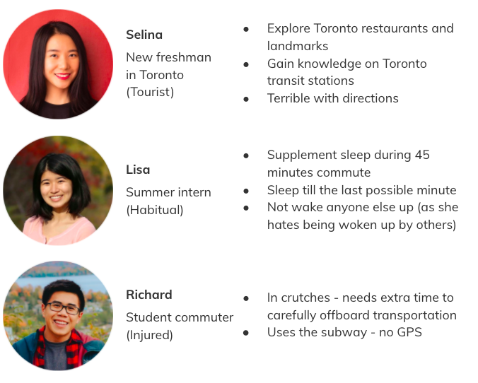
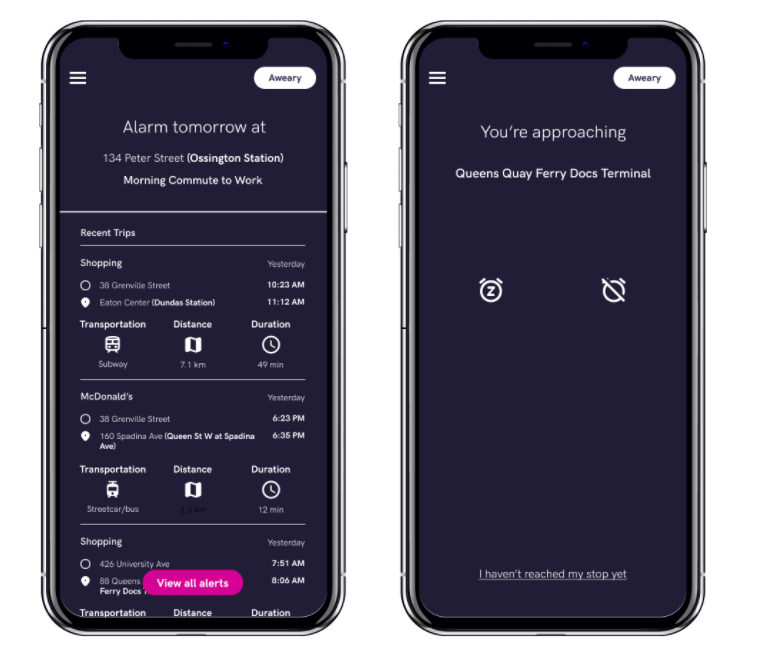
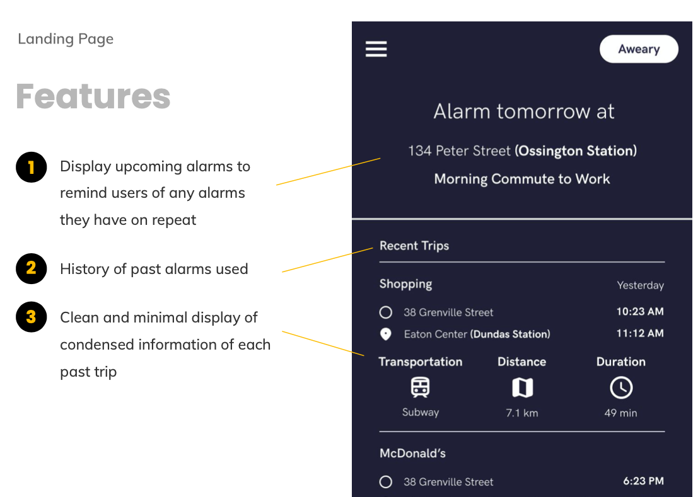
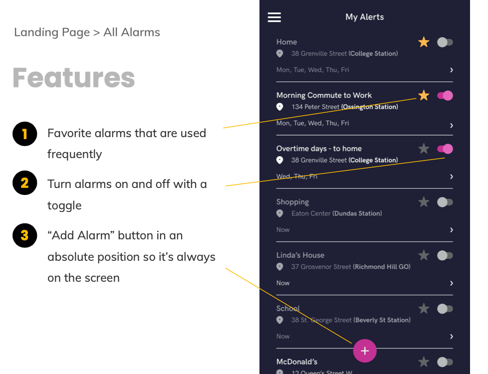
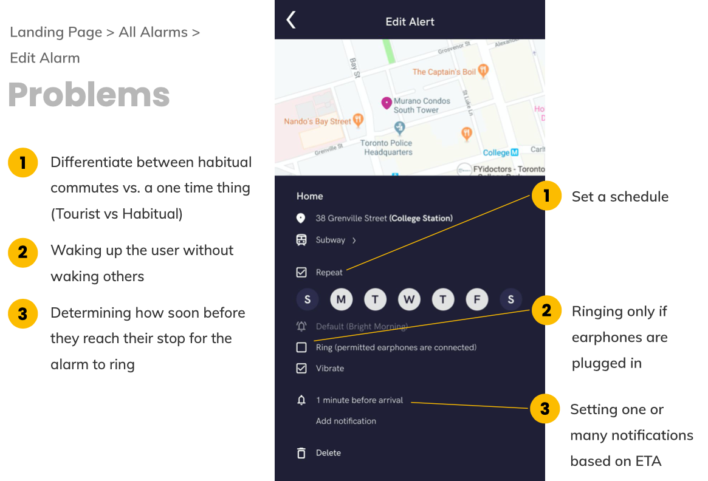
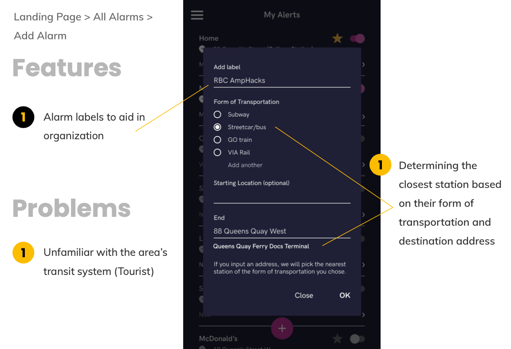
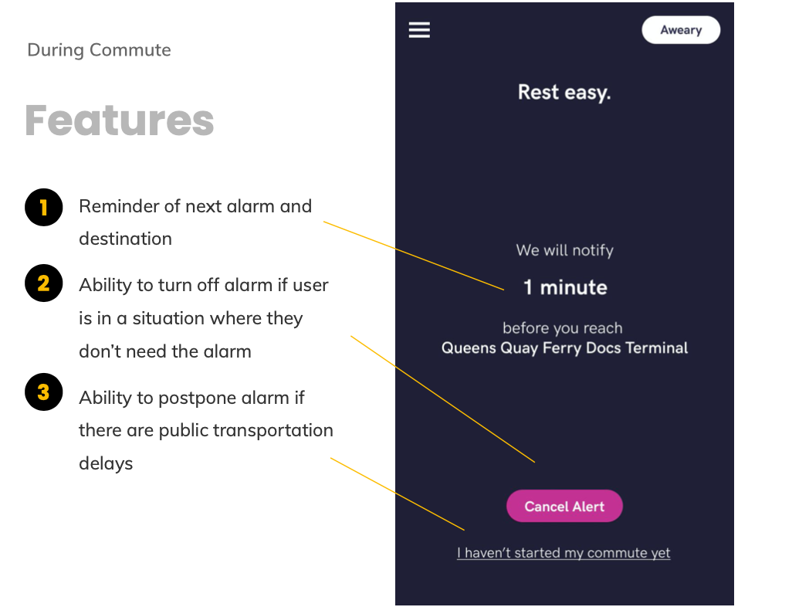
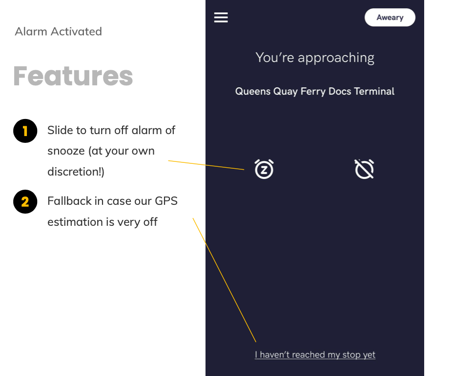

View My Prototype
Background
This was a project created by my team at RBC’s hackathon AmpHacks 2019. We designed and analyzed an app meant to notify commuters as they approach their destination. Our app placed 3rd overall in the competition with over 200 participants!
The team consisted of 2 business analysts, 1 developer, and 1 UX designer (me). I created/developed user research, user personas, journey mapping, iterative prototyping, and usability testing, all within the 24 hour hackathon.
The Problem
At RBC’s hackathon AmpHacks, they challenged us with the prompt “How can you improve Canadian lives?”.
In the summer of 2019, after waking up to an empty GO train and getting off seconds before the doors shut, I had trouble falling asleep during my commute for the rest of summer for a fear of that happening again. That sucked because that 45 minute commute would have been a great way to catch up on sleep.
This experience came to me when I heard this prompt, leading my team to deliver Aweary, a proof-of-concept mobile app to wake users up, and not those sitting next to them, on their commute.
With further Googling, we found a UK study showed that people missed their stop 29 million times in 2013 due to distraction. Torontonians on average spend 96 minutes commuting everyday. Our team discovered that this is an issue that truly affects Canadian lives.
Research
My team did a round of interviews with people at the hackathon. This ranged from students we were competing against to employees of RBC who were on site mentors.
We asked a short set of question:
- In the last 6 months, what forms of public transportation did you take and where did you go?
- What do you do to pass time on your commutes?
- In the last 6 months, how often have you missed or nearly missed exiting at your destination? If yes, what contributed to this?
- Do you face challenges when approaching or arriving at your destination?
- How do these challenges affect your commute and daily life?
- Are there certain apps you tend to use or associate with your commute?
- What is the app(s)?
- Are there any limitations to them?
From this, we gathered the following key points:
- Main reason for missing their stop is distraction (phone, daydreaming, conversations)
- Fear of sleeping past their stop causes poor sleep
- Unfamiliarity with area causes anxiety of missing stop
- Don’t want to bother other commuters
- Need to be notified about reaching stop much earlier in advance due to impairment
- Google Maps doesn’t work underground in subways
This showed us the different ways our app could help commuters. The problem was so much larger than just falling asleep.
Framing
Based off the needs of people that we discovered during research, we grouped our target demographic into 3 groups of people:
- Impulsive: e.g. tourists, they’re unfamiliar to the area and must be cautious the entire ride for their stop
- Habitual: provide them a relaxing ride so they can get distracted in reading a book or take a nap
- People with disabilities such as vision or hearing impairment
Members of my team have personally lived the experiences of each of these groups. I set the user personas around us and the needs/goals that we each wanted while commuting.

Goal
We aimed to reduce FOMYS (Fear of Missing Your Stop) amongst commuters and maximize use of their time. The 96 minutes that Torontonians spend on average commuting could be put to better use. We envisioned the time being put into being productive and catching up on sleep all so we could spend more time with our loved ones at the end of the day
Outcome

Journey mapping with the user personas allowed me to hone in on the features that would really help this app affect Canadian lives as well as create a smooth flow that the user would go through to set an alarm.






Outcome
Our application used a combination of GPS location tracking and accelerometer to track your vehicle’s position relative to your destination. Why an accelerometer? We know GPS tracking is an issue in Toronto subways. By tracking forward acceleration in a moving vehicle, the algorithm will determine whether the vehicle has stopped moving as well as the total distance travelled. The application will use this information to notify you once you’ve reached your destination.
Business Implications
It is a huge benefit for RBC to know the travelling patterns of their customers. By tracking users’ travelling routes, we are able to create user behavioral patterns to help design innovative banking products.
Our company is also able to sell location based data and key data insights to companies in areas we operate in.